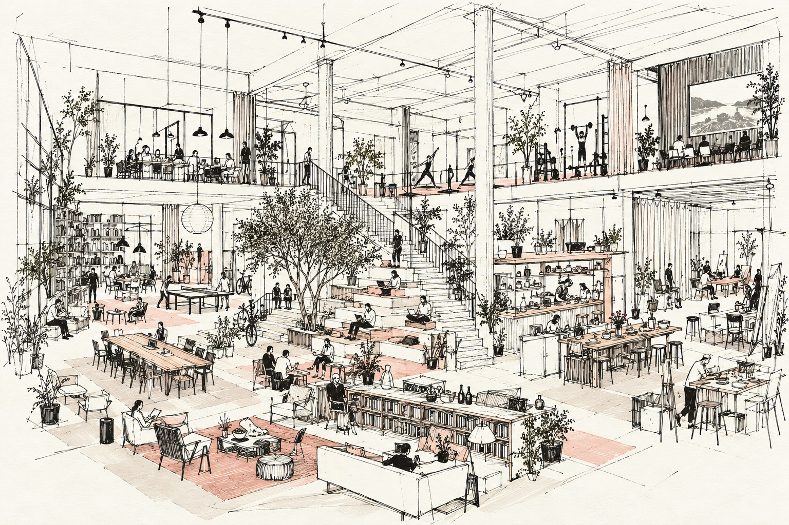

Making places since 2010.
The work presented here covers different places, uses and scales. From open spaces to entire buildings and single floors. Much of it involves giving old buildings a new life.
Every place is different, but the questions are often the same: How do places work? What brings people together? And what makes them want to come back?
The work has taken different forms, from ideas and planning to development, construction and years of operation. Some places are already part of everyday life, others are still taking shape, and some never happened.
Many people have been part of this work over the years. People who imagined, designed, built, managed and brought places to life. Each left a mark. Some became friends and partners, and still are.
In the end, it’s people who turn a space into a place.

Dates indicate when a place opened or when work on the project began.
{{para.t}}
{{p.tagsLine}}
{{p.credits}}